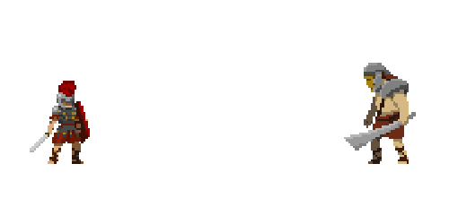

The Gallic Wars[a] were waged between 58 and 50 BC by the Roman general Julius Caesar against the peoples of Gaul (present-day France, Belgium, Germany and Switzerland). Gallic, Germanic, and Brittonic tribes fought to defend their homelands against the Roman campaign. The Wars culminated in the decisive Battle of Alesia in 52 BC, in which a complete Roman victory resulted in the expansion of the Roman Republic over the whole of Gaul. Though the various collective Gallic armies were as strong as the Roman forces, the Gallic tribes' internal divisions eased victory for Caesar. Gallic chieftain Vercingetorix's attempt to unite the Gauls under a single banner came too late. Caesar portrayed the invasion as being a preemptive and defensive action, but historians agree that he fought the wars primarily to boost his political career and to pay off his debts. Still, Gaul was of significant military importance to the Romans.
